拾页第三轮 · 实际运行截图与创作导出
2026-10-07。新增独立文字、实例裁切、多选对齐，保留第二轮轻编辑方向。这里是实际运行页面和应用生成的PNG，未用设计稿替代验收。
前图：第二轮6e33c18独立代码快照，同一原稿。后图：4186最终生产构建index-CIv07aLn.js。验收页iframe实际CSS视口设为图注尺寸，隐藏控件后按边界截图，文件尺寸审计一致。375/390手机是浏览器视口模拟，Windows滚动条占15px内容宽；未验证真机或软键盘。
桌面 · 1440 × 900
第二轮基线：原稿保持
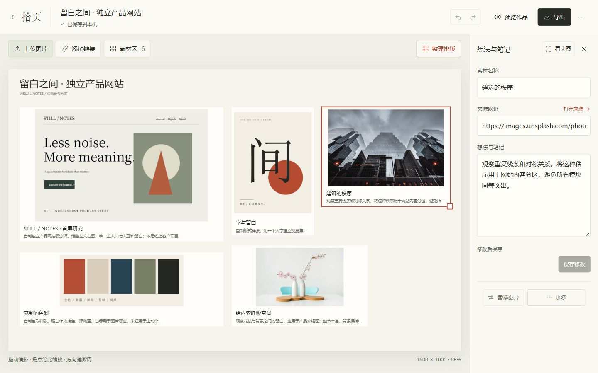
第三轮：添加文字与图片裁切入口

桌面 · 1280 × 720
手机CSS视口 · 375 × 812
第二轮
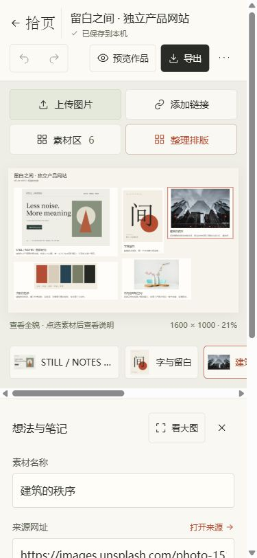
第三轮：可添加文字，精细裁切留在电脑

手机CSS视口 · 390 × 844
第二轮
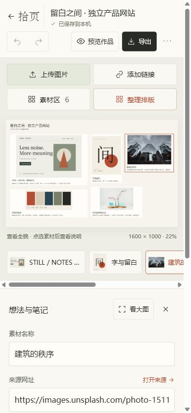
第三轮
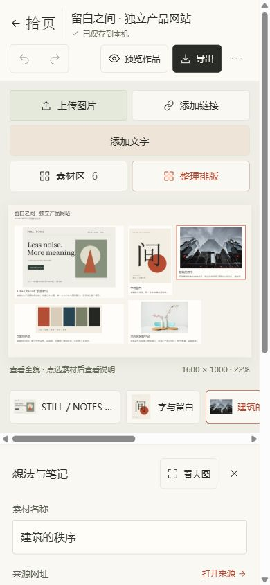
创作练习 · 应用实际导出PNG
2份有来源摄影、6对象：独立标题/想法，完整建筑图与另一份实例的局部取景，室内参考。明确练习身份。右上更多可使用示例，先备份当前稿。
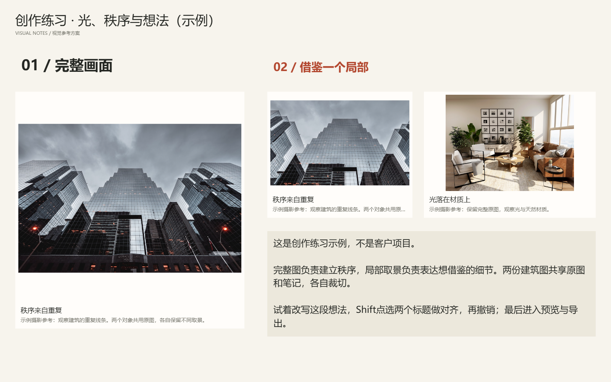
可编辑JSON
· 完整文字与来源
裁切预览与极端素材
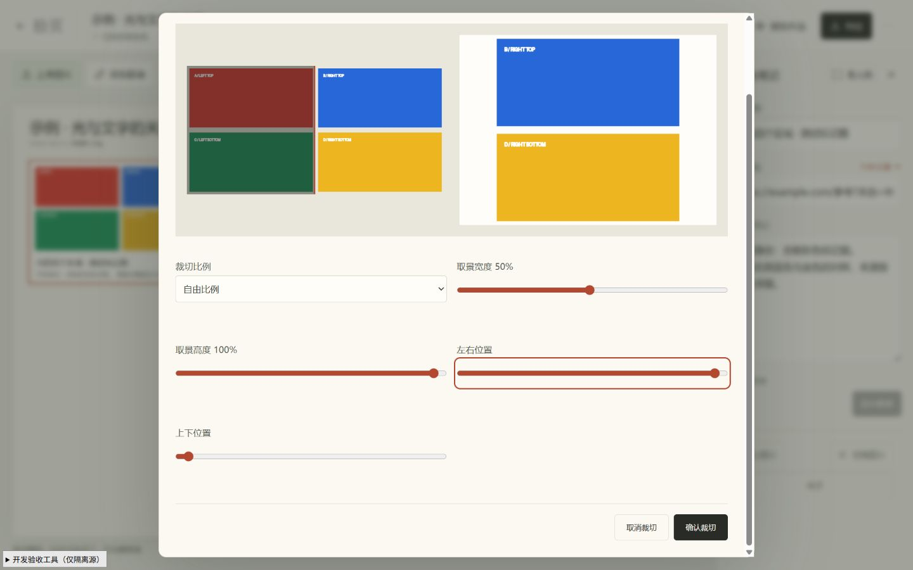
完整原图/取景框与结果，取消不改稿
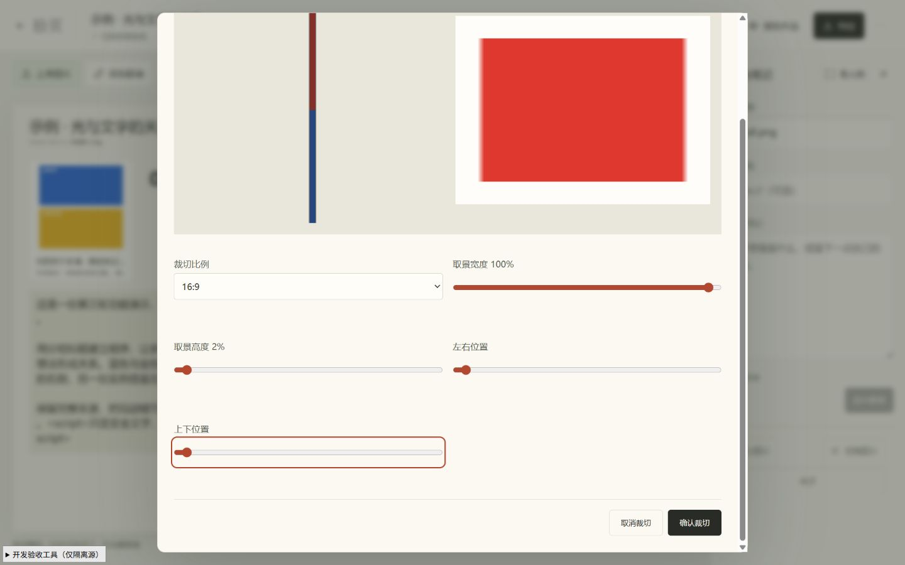
40×1200透明长图，归一化区域有效
标记工作流 · 实际导出与跨来源恢复
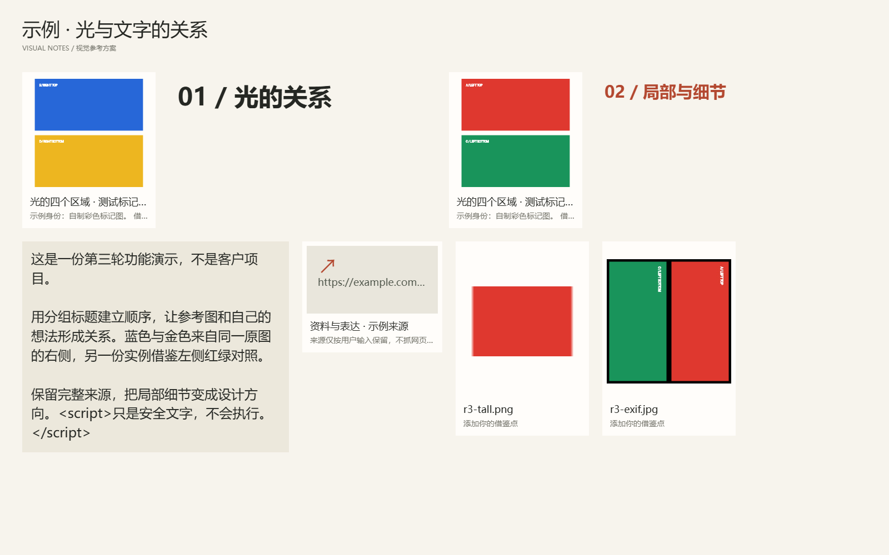
JSON ·
TXT ·
独立来源恢复PNG
桌面、375CSS视口和5188独立来源的PNG均174497字节、SHA256相同，实际查看与像素审计确认同一区域。不是仅看成功提示。新结构需新版恢复。
文字层序 · 两张真实PNG
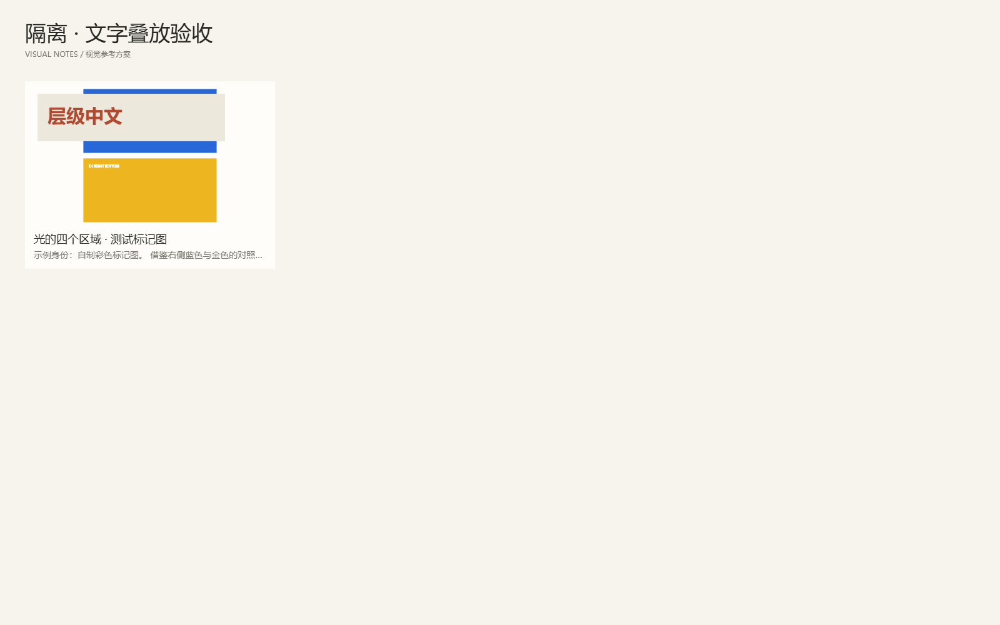
前层
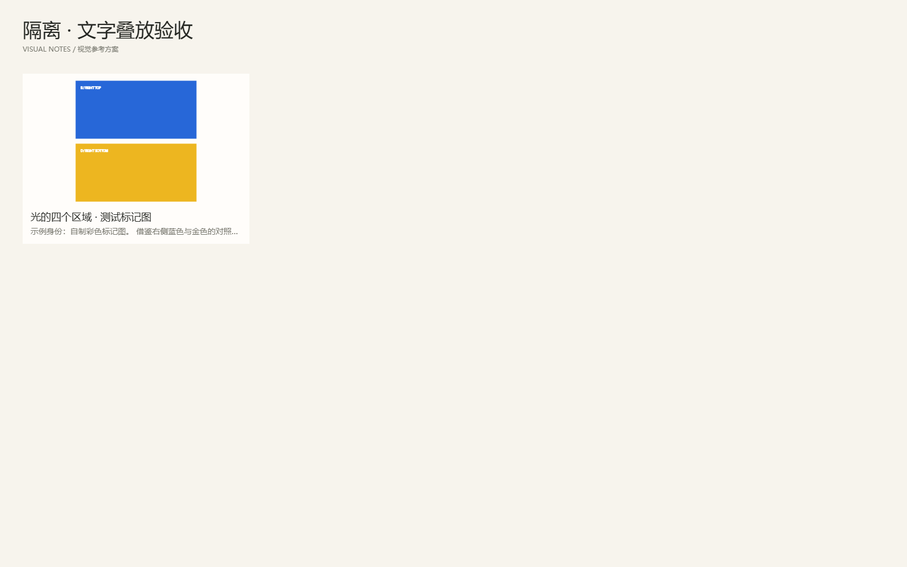
后层；撤销恢复全部层序
手机长文 · 实际CSS视口截图
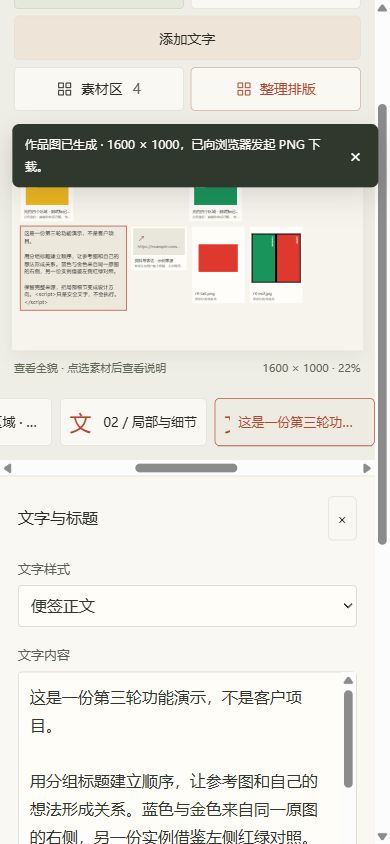
可滚动文字编辑，未验证真实软键盘
35/35单元测试与构建通过；109次UI/产物尝试中10次已附纠正说明，99项有效通过。文件选择是工具设置真实File，导出验证Blob和下载发起，不证明OS选择窗口或磁盘落盘。前两轮GIF保留历史身份，本轮没有伪造新录像。